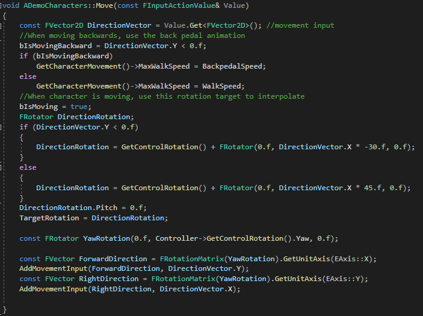
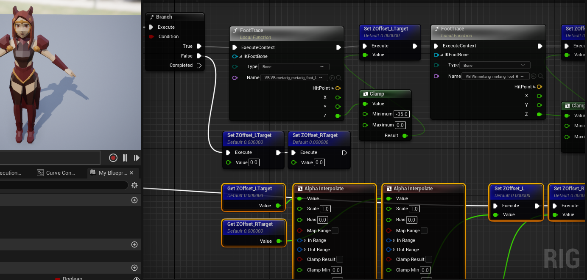

If you're curious about the 3D model on my page, allow me to introduce her!
This is Dragon_Warlock.fbx(name in progress), she is a character I originally designed for a D&D game. She has been brought to virtual life and is now the main character for my current project. This project is what I have been working on to familiarize myself with Unreal Engine 5.
FEATURES
This project currently uses a mix of C++ and Unreal Engine's blueprint system. The character movement was implemented in C++ using Unreal's new enhanced input system.
Movement was something I spent a lot of time getting just right. I wanted to spend less time making animations on Blender without sacrificing the visual appeal of multi-directional movement. I settled on creating two running animations for forward and backward movement. When the character moves in a direction, the transform rotates to make the character face diagonally.
Additionally, the character is always facing the camera and would rotate to face forward again when you stopped moving. The challenging part was getting all these rotations to work while also interpolating for smoother motion. I accomplished this by creating a TargetRotation variable that always kept track of the rotation the character needed to interpolate to.
A feature I implemented with blueprints was the FootIK, making use of Unreal's inverse kinematics system.
I always wondered how it was done ever since I saw it in games like Assassins Creed and Genshin Impact. I love immersive details like this, and I'm very glad Unreal has made implementing it so easy.
